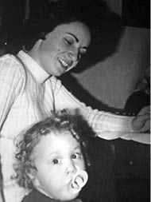
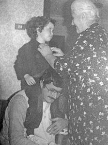
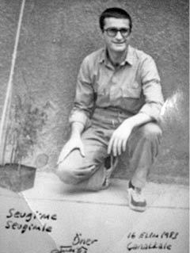

“Aile Anılarımız, Bir Tane Aile Fotoğrafımız Yok Birlikte.Bunu Yaşamamıza İzin Vermediler.”
Sevgi Can Yağcı Aksel1
12 Eylül Darbesi’nden sonra annem Nevin Yağcı ve babam Öner Yağcı içeri alındılar. Annemin Kurtuluş örgütü kadın kollarında aktif görevi vardı. Babam TÖB-DER yöneticisiydi. Bildiğimiz, devlet düzenini yıkmak gerekçesiyle tutuklandılar. Annem Mamak Cezaevi’nde kaldı ve birkaç ayda kurtuldu ama tam bir kurtuluş diyemeyiz ona. Çünkü cezaevinden çıktıktan sonra intihar etti. Babam ise 1985 yazına kadar, 5 yılı aşkın bir süre Mamak, Çanakkale ve İmralı cezaevlerinde yattı. 12 Mart’ı da sayarsak cezaevlerinde toplam 7 yıl kaldı.
Annem ve babam cezaevindeyken ben anneannemlerin yanında kaldım. Tek çocuktum. Annem 1982’de vefat etti, babam da o sırada tutukluydu. Babam çıktıktan sonra İstanbul’a yerleşti, şehirler arası bir baba-kız yaşantımız oldu, özlem devam etti. Benim düzenim Ankara’da kurulmuştu, anneannemin ve dedemin yanında mutluydum herhalde, bu yüzden ailede böyle bir uzlaşmaya varılmış. Babam yeni tahliye olmuştu, çok zor zamanlar geçirmişti, hayata sıfırdan başlayacaktı; benim bu sıkıntıları göğüslememi istemediler, sakınmak istediler demek ki böylece Ankara’da kaldım. Dedem Siteler’de mobilyacıydı, anneannem ev hanımıydı. Sakin bir hayatımız vardı, bir evimiz vardı, evi geçindirme konusunda bütün sorumluluğu dedem üstlenmişti ama pek fazla maddi zorluk çekmedik.
Annem ve babam tutuklandığında ben 3-4 yaşlarındaydım, tutuklu oldukları benden saklandı. Annemi sorduğumda “iş gezisinde, şehir dışında” deniyordu. Babamın da çalıştığını, annemi ziyarete gittiğini söylüyorlardı. Uzunca bir süre sonra, babamı görmeye gitme zamanı geldiğinde, açıklamak zorunda kaldılar. Hapiste olduğunu sanırım 7 yaşında, evde badana yapan dayımın, işe ara verip beni yanına çağırarak durumu anlatmasıyla öğrendim. Konuştuklarımız değil de keskin bir boya kokusu zihnime kazınmış... Annemin ölümünü nasıl öğrendim, kim söy-

Sevgi Can annesi ile birlikte
ledi, söylendi mi, kendiliğinden yokluğuna alışmaya mı başladım bilmiyorum ama ölümüyle ilgili herkese kalp krizi dediğimi hatırlıyorum. Demek ki bana da öyle söylenmiş. O dönem babam, düzenli mektup yazıyordu bana, postacının geliş saati belliydi, aşağıya inip beklerdim, selamlaşırdık, mektubu kapardım. “Görülmüştür” damgalı mektuplar... O mektuplar sürekli tekrar tekrar okunurdu, her mektubunda bir masal yazardı babam, o yüzden uykudan önce eski mektuplar yine ortaya çıkardı. Resimler de vardı içinde; kediler, kuşlar, gemiler, korktuğum hayvanlarla ilgili sevimli sevimli masallar, çizgiler, babamdan hayat dersleri…Okuma yazma öğrenene kadar anneannemler okudu o mektupları. Hep hayatımda olan, yanımda hissettiğim ama dokunamadığım, mektuptan bir babam vardı.
Annemin ölümünden hemen sonraki günü hayal meyal hatırlıyorum. Bizimkiler evde yok, dedemin annesi, büyükbabaannemle oturuyoruz. İki büklüm, bastonuyla zor yürüyor. Çok sessiz. Birileri gelmiş, kalabalık bir ziyaret, telsiz sesleri aklımda, polis mi emin değilim ama annemle ilgili sorular soruyorlar, notlar alıyorlar, büyükbabaanne de “Bilmiyorum evladım Nevin’in annesiyle babası birazdan gelecekler” filan diyor. O karede kendimi görüyorum ama ölüm bildiğim, anladığım bir şey değil tabii, öyle ortalıkta dolanıyorum.
Annem Mamak’tan çıktıktan bir süre sonra aynı davadan tekrar mahkemeye çağrılıyor. Tutuklanacağından emin. Ertesi gün mahkemede giyeceği şeyleri ütülüyor, hazırlıyor, çok da kafasında ölüm planı varmış gibi değil. O giysileri aslında giyemeyeceğini kendisi de bilmiyormuş gibi. Annemi hastaneye yetiştirdiklerinde hayattaymış. Anneannem, teyzem ve dedem için çok sarsıcı bir veda bu... Anneannem bunu sadece bir kez anlatabilmiştir. Bir gün sohbet ediyorduk, birden anlatmaya başladı. Hastanede kapıda bekliyorlarmış, “beyaz çarşaf” istemiş doktorlar, o an anlamış kızının gittiğini. Kimler kimler gitti böyle... Bu kadar acıyı nereye gömdü bu toplum, nasıl atlattık aklım almıyor. Babam o sırada zaten tutuklu. Kalp sorunu vardı sanırım, annemin öldüğü ona uzunca bir süre söylenmiyor. Annemin mektupları kesilmiş. “Anlamadın mı?” diye sorduğumda, babam: “İçeri aldılar ve bir terslik var diyordum ama ölüm, intihar hiç aklıma gelmedi” demişti. Koğuş arkadaşları annemin ölümüyle ilgili yazıların olduğu dergileri saklıyorlarmış babamdan. Bir gün, bir görüşmeci söylemiş. Böyle acı bir haberi alıp koğuşa nasıl dönülür, insanın içindeki fırtına parmaklıklar ardında nasıl dinebilir? Çok zor olmalı. Sonra koğuşta dergiler yavaş yavaş ortaya çıkmış.
Annemden ve babamdan o döneme dair elimde mektuplar var. Mamak’taki işkencelerle ilgili pek bir şey anlatmamış haliyle. Bir tek mektuplarında; ki ben hepsini okuyamadım, okuduklarımı da rahmetli Türkel Minibaş’la birlikte okumuştuk, onu da zamansız kaybedince o mektupları çok uzaklara sakladım. Yazdıkları içinde en çok dikkatimizi çeken şeylerden biri temizlik özlemiydi. Sürekli temiz çarşaf, temiz giysiler istiyordu. Çamaşır yıkamaktan söz ediyordu sık sık. O aklımda kalmış ve benimle ilgili kaygıları, titizliği ayrıntılı soruları, talimatları... Annemin Mamak’tan çıktıktan sonraki dönemini hatırlamıyorum. Annemi bile hayal meyal hatırlıyorum, öyle diyeyim. İntiharını tesadüfen öğrendim. Babaannem bir gün ağzından kaçırdı, duydum ama çok da anlam veremedim. Sonra da annemin bir arkadaşı annemin ölümünü konu alan bir öykü kitabıyla geldi. Şaşkınlığın en büyüğünü kitabı okuyunca yaşadım. Hem intiharı öğrenmek hem öyküsünü okumak ve benden gerçekleri saklayan ailemden bu gerçeği bildiğimi saklamak, bu da başka türlü bir karmaşa. Bu arkadaşı annemin yaşamını, bir yazar hanıma anlatmış, bu yazar hanım da çok duyarlı ya, hemen bir öykü kaleme almış. Öykü tabii, bunu bize neden yaptın denmiyor, sorsanız kurmaca (!) çünkü. Okuyanı çok ağlatsın diyerek gerçeğin iyice dramatize edildiği ve çarpıtıldığı bu metin, bu yazar hanım için iştah kabartan bir temadan ibaretti belli ki. Acımızı kendine öykü konusu yapmak umarım yazarlık kariyerinde hedeflediği yere ulaşmasına katkı sağlamıştır. Neyse sonuçta bu süreç, bende annemin hayatını anlamak için bir dedektiflik oyununa dönüştü. Bu oyunda aileme yer yoktu. Çünkü benden sakladıkları her şeyi öğrenmiştim ama bununla yüzleşmek onları çok üzecekti, o yüzden bildiklerimi ben de onlardan sakladım. Babam yeni bir evliliğin eşiğindeydi, mutlu olmasını istiyordum, nihayet güzel günler başlıyordu. Yani onun yeni hayatı benim eskileri deşmemle bulansın istemedim ama şimdi düşününce tam da ergenlik çağındayım, eminim kendime çok zorlaştırdım hayatı. Annemin intihar ettiğini bilmek çok şaşırtıcıydı. Utandım, üzüldüm, ona çok şefkat duydum, acıdım, niye öldü diye soranlara kalp krizi derken, yalan söylemek artık ağır geliyordu; sonra da çok kızdım kendi isteğiyle beni, bizi bırakıp gittiği için. Peş peşe, böyle birbirini takip eden... Önce şaşkınlık, hiçbir şey hissedememe hali, sonra bir anlamış havaları, sonra “niye anlayayım, ölmeseydin” demeler, başa sarmalar. Buna sebep olan herkese delice öfke duyma hali... Babamın cezaevinde olduğunu öğrenmeme eklenen yeni şoklar işte!..
O zaman yani babamın tutuklandığını öğrendiğimde iyi insanları niçin cezaevine atarlar diye hayli kafa patlatmıştım. Babam benim gözümde tabii bir kahraman ve sadece iyiyi temsil eden her şeyi yapan bir baba. Neden cezaevinde? Hayatla ilgili bütün ilkokul retoriği dağılıyor; mesela “polisler iyidir, bizi hırsızlardan korurlar”, yerini “polisler kötüdür, çocukları annelerinden babalarından ayırırlar”a dönüyor. Siyah ve beyaz tarifler. Küçük yaşlardasın, soyutlama becerin bunlardan ibaret aslında. Bir anda çok başka bir gerçeklikle yüzleşmek zorunda kalıyorsun, güven duyduğun şeyler altüst oluyor. Çocukken bu karmaşalardan beni kitaplar da korumuştur. Öykülerin, masalların içine çok güzel dalardım. Sanırım bu kurtardı beni, hayal dünyamda bir şekilde çözdüm, yerine oturttum bu durumları. Bizimkilerle de konuştukça kızgınlığım dağıldı. Zaman zaman nükseder ama onları bu ketumluğa sevk eden gerçekler, baskılar, korkular şimdi buradan bakınca çok insani. Ben olsam belki aynı şekilde üstünü örterdim, bilemiyorum.
Aşağı Ayrancı’da oturuyorduk, anneannemler hâlâ da orada oturuyor. Şöyle şeyler geliyor aklıma: Anneannemi annem zannederlerdi ama bu beni rahatsız ederdi, benim annem çok genç ve çok güzel bir kadındı. Anneannem –ona, pamuk kızım anneannem dermişim; çünkü o beni pamuk kızım diye severmiş, bu lafı bir sevgi sıfatı sanıyordum sanırım– beni okula götürünce, servise bindirince filan annemin olmadığı ortaya çıkıyor gibi saçma bir kaygım vardı. İllaki birileri sorardı, ben de atardım. “Annem Amerika’da” derdim mesela. Neden Amerika bilmiyorum. “Baban nerede?”, “O da Amerika’da, annemi görmeye gitti.” Bizim apartman aslında, belki belgeseli çekilecek bir apartman, işte Sinan Çetin’in o sıkı solcu zamanlarında üst komşumuz olduğu, sağ bir örgüt üyesi olan karşı komşumuzun annemle yaşıt oğlunun annemle aynı günlerde öldürülüşü, anneannemle onun annesinin birbirine destek oluşu, üç intihar vakası derken sonuçta garip bir apartman. Toplumun o günkü durumunun küçük bir kesiti işte... Çocuklar olarak bizler de yakın yaşlardaydık. Bir anda babalar yok oldu mesela. Öyle olunca tabii zamanla dayanışma duygumuz oluştu, dertlerimiz de, hayallerimiz de bir dönem birbirine yakındı. Çok da yalnız geçirmedik çocukluk yıllarımızı. Kendi içinde bir grup, bir aidiyet duygusuyla, onu o çocuk kafamızla bir şekilde atlatmaya çalıştık demek ki! Benim üç teyzem var, enişteler, kuzenler, anneanne, dede, büyük bir aileydik. Aman eksiklik ve yalnızlık hissetmesin diye sürekli bir kollanma halim vardı. O yüzden sevgi açlığım olmadı. Çocukluk buradan baktığımda göründüğü kadar katlanılmaz bir şey değildi.
Ahmet Vefik Paşa İlkokulu’na gidiyordum. Okul yıllarımı çok hatırlamıyorum aslında. Bu konuda bir dönem tedavi görmek istedim ama zorlamaya çok gerek yok, yaş ilerledikçe birtakım anılar geri gelecek, dediler. Bir hafıza kaybı gibi değil, mutlaka var bir şeyler ama bazılarının anlatabildiği gibi gün, ay, şunu oynardık, şunu yapardık gibi şeyleri pek hatırlamıyorum. Anlatabileceğim çok sıra dışı anılarım o yüzden açıkçası yok. Babamın hapishanede oluşu veya annemin intiharıyla ilgili çok da bir şey anlatmadım kimseye. Paylaşmadım. Çok bilmedi arkadaşlarım falan. Yakın arkadaşlarım, muhtemelen anneannemlerle anneleri görüştüğü için, bilirler ama konuyu açmazlardı. Sezin var arkadaşım, bu toplumsal felaketlerin dışında, güzel bir aile hayatı vardı, hep imrenirdim, her pazar onlara balık yemeğe giderdim, hâlâ yakın arkadaşımdır ilkokul 1’den beri, onunla bile oturup konuşmayız bunları, kendi ailesinden farklı bir aile olduğumuzu baştan beri bilir, ben de bildiğini bilirim. Dostum Sanem’le de aynen öyledir.
Çok hayali arkadaşım vardı. Çocuk psikolojisinde ne anlama geliyor bilmiyorum, oyuncaklarıma hep canlılarmış gibi davranırdım. Yatağımın içinde peluş oyuncaklarımdan bana yer kalmazdı, onlarla uyuyabiliyordum. Toplumda parmakla işaret edilen bir çocuk muydum hiç bilmiyorum. Anneannem ve dedem beni o kadar koruyorlardı ki hiç böyle bir şey hissetmedim. Bana hayatlarını adadılar. Hem annemin hem babamın emanetiydim, zor iş. Mesela anneannem, annemin arkadaşlarının birçoğuyla beni görüştürmedi. Bu kollanma hali 12-13 yaşına kadar çok belirgin. Babam cezaevinden çıktıktan sonra, hayatım üzerinde o daha çok söz sahibi oldu tabii ki.
Mücadelelerini Benimsedim...
Anlamaya başladığım süreçte onların mücadelesini çok hızlı bir şekilde benimsedim bir kere. Çocuklarda gördüğümüz iki şey var zaten; ya sahipleniyorsunuz ya tamamen reddediyorsunuz. Bana çok makul geldi, çok doğru geldi. Onların ciddi bir şekilde haksızlığa uğradıklarını düşündüm. Ben küçükken annemle babam aranıyormuş. Bir süre kaçmışlar. O arandıkları dönem, haberlerde isimler geçiyor, mesela ben annemin adını duyuyorum, babamın adını duyuyorum, Kenan Evren’in sesi evi doldurmuş, evdekiler de bir o kadar sessiz ve tedirgin. Işıklar sönük, karanlık, böyle sahneler var gözümün önünde, onlar çok rahatsız ediciydi. Komşular geliyor, duydunuz mu Nevin’in adı geçti, Öner’in adı geçti diye ya da ben anneannemde kalıyorum, babamla annem bir yerde kalıyorlar ama o yeri ben bilmiyorum ve bilmemem gerekiyor. Oraya taksiyle götürülüyorum, adresi bilmemem gerektiği için farklı farklı yollardan gidiyoruz ama ben her seferinde ineceğimiz yeri cin gibi çakıyorum. Kendi anne ve babanla kaçak göçek görüştüğün bir süreç o aslında. Çok absürd yani, nasıl tanımlanabilir ki: Bunu tarif etmesi çok güç. Benim yetiştirilmemle ilgili anneannemle dedemin kuralları, annemle babamın kurallarından daha çok belirleyici oldu hayatımda. Anne ve baba bununla karşı karşıya geldi zaman zaman, “sizin çocuğunuz ama biz bakıyoruz” gibi bir durum var. Doğuran onlar, bakan öbürleri. Her şeyin çok iç içe geçtiği bir dönem.
Yakalandıkları dönemle ilgili hiçbir şey hatırlamıyorum. Ama babam tutuklandıktan ve annem öldükten sonra evi çok kez polis bastı mesela. Onlar hep aklımda, uykularımda böyle içeride bir sürü üniformalı insan ve bağrış çağrış, çocuk uyuyor uyandırmayın dendiği an, tak tak tak içeri bir sürü kişi giriyor bir anda bir kâbusa uyanıyorsun, o tür sahneler hatırlıyorum. Benim odam apartmana bakıyordu, apartman penceresinden bakınca silahlı insanlar, merdivenleri tutmuşlar, babamı soruyorlar dedeme, “tutuklu ya” diyor, dinlemeden aramaya devam... Maksat zulmetmek.
Annem öldükten sonra dahi annemi aradıklarını biliyorum. Annemi arıyorlar, dedem ağlamaklı “kızım öldü” diyor, “kanıtla” diyorlar. Bir belge gösteriyor öldüğüne ilişkin. Sonra tekrar mahkemeye çağrılıyor annem. Dedem sonunda karakol basıyor, artık çıldırıyor herhalde, “Benim yavrum öldü, hâlâ ne istiyorsunuz bizden?” diyor. Nasıl bir düşmanlık! Karşılarındakinin insan olduğunu unutabilme hali son derece dehşet verici, öyle değil mi? Teyzem ODTÜ Mimarlık’ta okuyordu, henüz evli değildi, bizde kalıyordu. Teyzemin İngilizce mimarlık ders kitaplarını topluyorlar yasadışı yayın diye. Onların yırtılması, parçalanması sahneleri gözümün önünde. Kitap bizim evde en çok değer gören şey, benim de çok özlediğim annem ve babamdan öğrendiğim, onların yerine sevdiğim bir şey. Hep bana bir şeyler okunur, okutulur, işte kitaplar alınır, güya babam gönderiyor diye ama teyzem alırmış meğer. Kitaplar parçalanıyor, sanki annemle babamı parçalıyorlarmış gibi, böyle kasılıp kaldığım zamanlar hatırlıyorum mesela. Evde değil ama büyük teyzemin bahçesinde kitaplarımız yakıldı, saklandı, gömüldü. Hatta belki hâlâ orada duruyordur onlar. Bizim evde kitap yakılmadı. Çünkü bizim apartman çok müsait değildi ona. Soba yoktu mesela.
Biz çekirdek aile olarak birlikte zaman geçiremedik, aile anılarımız, ne bileyim hafta sonu rutinlerimiz filan hiç olmadı. 30. yaş günümde babama dert yanmışımdır “Bir tane aile fotoğrafımız yok birlikte” diye. Annemin kucağında ve babamın kucağında ayrı ayrı fotoğraflarım var ama hep birlikte yok. Bunu yaşamamıza izin vermediler. Bugün de saçma sapan davalar icat ederek topluma aynı acıları yeniden yaşatıyorlar, bir anlamda gözdağı veriyorlar. Bizler hep altından kalkabilmek için yaşadıklarımızı normalleştirmeye çalıştık. Kendimi şunlarla teselli ettim bu yaşa kadar, kaza da geçirmiş olabilirlerdi, bana sahip çıkan böyle sevgi dolu, geniş güzel bir ailem olmayabilirdi. Bu şekilde bastırmaya çalışıyor insan ama öyle değil. Çok büyük bir haksızlık ve adaletsizlik sonucunda sizin elinizden alınan çok temel bir hak bu; yani aile olma hakkı, anne, baba, çocuk olma hakkı. Anneannem, dedem ve babaannem için düşünüyorum (öbür dedem ben doğmadan vefat etmiş o dönemi yaşamadı), gözlerinden sakındıkları yavrularını yitirme acısı ya da evlatlarının çektiklerine eli kolu bağlı bir tanıklık mahkûmiyeti. İşkencenin en büyüğü bu sanırım. Önce aileleri, sonra da toplumu darmadağın ettiler. Aileler

Sevgi Can Yağcı, babası Öner Yağcı ve
babaannesi ile birlikte
çocuklarının siyasal mücadelesi sonucunda bir konum aldılar, kendini bir yerde bir şey için savaşırken buldular, çocuklarının idealleri için cezalandırılmaları gerçeğiyle bir anda yüzleştiler. En ilgisiz, en apolitik aileler bile çocukları yüzünden cezaevleriyle, mahkemelerle, morglarla tanıştı. Yeni ve farklı gündelik yaşam alışkanlıkları kazandılar.
Şu anda dedem bana kızıyor mesela. Twitter’a yazdığım bir şey yüzünden kaygılanıp, “Sen nasıl böyle şeyler yazıyorsun. Bizim daha ne kadar canımız yansın” diye söyleniyor. O dönemde anneme pek

Öner Yağcı cezaevinde
söz geçirememiş tabii. Annem, Gazi Eğitim Enstitüsü Müzik Bölümü’nde okuyormuş. Dedem onu gizlice izlermiş, başına bir şey gelir diye korkuyormuş. Okul çıkışlarında gruptan ayrılınca saldıran filan olmasın diye takip edermiş. Benim gördüğüm, onlarda annemin ölümüyle birlikte kendilerini suçlamaya döndü süreç. “Ne yapsaydık da kızımız ölmeseydi” diye. “Niye bu işlere girdiler” gibi bir şey değil ama ne yapsaydık da hayatta kalsaydı diye. Oysa bu acının, bu kıyımların suçluları ortada…
Cezaevi Ziyaretleri...
Çocukluğumun en çok etkilendiğim anlarından biri, görüş günleridir, özellikle görüşün bitiş anıdır. Zaman hemen geçer, sevdiğini orada bırakır adım adım ondan ayrılırsın. Dönüp dönüp bakarsın, tekrar koşup sarılmak istersin. Geçen gün Mustafa Balbay’ın çocuklarıyla, Nazlıcan Özkan’ın babası Tuncay Özkan’la görüş günleriyle ilgili bir yazı okudum, mideme taş oturdu. Nasıl da benzer günler yaşıyoruz. Birbiri ardına açılan siyasi davalar, davaların görüldüğü siyasallaşmış bir hukuk sisteminden adalet bekleme hali... Babam da geçenlerde, “Biz en azından neyle suçlandığımızı biliyorduk” dedi. Aynen öyle! İşte o görüş günleri, bütün bir özlemi sığdırdığın en çok yarım saat. O kopamama anı, çok sarsıcı bir duygu hali, nasıl anlatırım bilmiyorum. Ağlatabilir beni şu anda. Gitmeyeyim, biraz daha kalayım, koklayayım ne olur... O günlerle ilgili sarsıcı anılardan biri de şudur; Çanakkale’ydi herhalde, sabah çok erken bir vakit gitmiştik, hep öyle olurdu. O gün soyadı tutmuyor diye beni içeri tek başıma almak istiyorlar. Dedem de tek başıma içeri göndermek istemiyor, küçüğüm çünkü. Derken orada böyle bir kavga gürültü kopuyor, ben o karambolde içeri akıyorum. Babamı bulmaya çalışıyorum ama ne mümkün! Bir kere yüksekte, boyum yetmiyor. Herkes bir örnek giyinmiş, herkes babamı andırıyor, o insanlardan herhangi biri babam olabilir. O korkumu hiç unutamam mesela. Biri elimden tutup yukarı çıkardı, babam karşımda gülümsüyordu, canım benim. Yaşamak anımsamaktan daha kolay bazen. Sonuçta kimdi yardım eden, dedeme izin mi vermişlerdi, babamı nasıl bulmuştum hiç anımsamıyorum. Hemen babama öğrendiğim bilmeceleri sıraladım. Ciddi olamıyordum onun yanında. Komik olmak en güzeli. O anları özellikle hiç unutmuyorum, saatlerce bekliyorsunuz, isimler okunuyor, jandarmalar kapıda, insanlar böyle bir itiş kakış... Bir yandan da teselli edici bir yanı var. Çünkü bir şekilde herkes dava arkadaşı. Büyükler için daha travmatik ama bizim için zaman zaman bekleyişin pikniğe dönüştüğü bir şey. Gide gele arkadaşlık kurduğum herhangi biri olmadı, orada herkes arkadaş oluyordu hemen. Oradan ayrılınca unutmak daha iyiydi sanki.
Babamın Dönüşü...
Babam cezaevinden çıktıktan sonra İstanbul’a gitti. Annesi ve kardeşleri İstanbul’da yaşıyor zaten. Bir de edebiyatçı olduğu için orada kendine daha uygun bir hayat kurdu.
Önce Ankara’ya uğramıştı ama. O günü çok iyi hatırlıyorum. Bizim apartmanın görevlisi bir Sultan Ablamız vardı. Sultan Abla, taze soğan ekmek tutuşturdu elime, soğan ekmek yiyerek herhalde 6-7 saat kapının önünde babamı bekledim. Bittikçe gidip biraz daha istiyordum. Bizimkiler çağırdığı halde eve girmiyordum. Ev çok kalabalık, bütün aile toplanmış, herkes babamı bekliyor. Ben aşağıda, apartman kapısında bekliyorum ve soğan ekmek yiyorum. Müthiş bir kavuşmaydı. Koala gibi yapışmıştım babama, bir türlü bırakamadım, “Kızım tuvalete gireceğim” diyor, bırakmıyorum. İnanamıyorum ki geldiğine! Sonra babamın eşyalarını kullanma alışkanlığı başladı bende. Ayda bir ya da iki, hafta sonları Ankara’ya, beni görmeye geliyordu. Her gelişinde çantasına el koyuyordum, kalemleri, çorapları, bana neyi olursa giyiyor veya kullanıyordum. Babamın eşyalarına ulaşabiliyor olmak çok büyük bir keyifti benim için.
Babam cezaevinden çıktıktan sonraki uyum sürecinde bizim iletişimimizde elbette problemler oldu. İhmal edildiğimi düşündüm. Şu anda bile bu konuda haklı görürüm kendimi. Ülkede süren politik arayışlar, soldaki yeniden şekillenme çabaları haliyle babamı fazlasıyla ilgilendiriyordu. Çok kalabalık evlerde buluşulur, çay ve sigara dumanı, nefes alınamaz, hararetli tartışmalar olur ve ben hiçbir şey anlamam. Canım sıkılıyordu tabii. Ankara’da yazarlar, şairler, eş dost Kardelen’de buluşurdu. “Kardelen Kebap” rüşvetiyle biraz sussam da genelde isyan ederdim. İşin benim için önemli kısmı babamın sadece iki gün Ankara’da kalacağı ve benim bu iki günü başkalarıyla paylaşmak zorunda oluşumdu. Bir dönem öyle geçti.
Yeniden gider, cezaevine götürülür diye bir korku duymadım. Çünkü “Artık gitmeyeceğim” demişti bir kere. Ben ona inandım. Sonraları tabii ki bundan korktum ama o zamanlar babam ne derse benim için gerçek oydu. Gitmeyeceğim diyorsa gitmeyecekti, nokta.
Geçmişi Konuşmak…
O günlere dair babamla tabii ki konuşuyoruz, bazen kamerayı alıp kayıt da yaparım. Çünkü birçok şeyi anlamak için o günlere geri dönmek gerektiği çok aşikâr. Türkiye’de solun ayrışmalarında uzlaşılamaz birtakım noktalar elbette var ama öte yandan mutlaka yan yana durulması gereken, birlikte politika üretmenin şart olduğu anlarda, bu kadar birbirinden uzak, hatta birbirine düşman olma halini anlayamıyorum doğrusu! Bunu sık sık babamla konuşurum. Deneyimi dinlemek, okumaktan çok başka bir şey. Cezaevi anılarını sorunca anlatır. Hep komik şeyleri anlatır. Komik derken, galip çıktığı hikâyeleri diyeyim. Babamın çok kötü bir kulağı ama çok da gür bir sesi vardır. Bu özelliği ünlüdür, işkence görürken, sürekli bağıra çağıra rahmetli Neşet Ertaş’ın Zahidem türküsünü söylermiş. Zahidem bir anlamda koğuşun direniş simgesi haline gelmiş. “Hoca Zahidem’i söyle” derlermiş. Dövüldükçe inadına söylermiş. Zahidem hikâyeleri çok anlatılır. Arkadaşları da çok anlatır, “Ah bu baban bize neler çektirdi” diye. Bir de bir görüş gününde ona kapıdan topladığım kır çiçeklerini götürmüştüm. Çiçeğin koğuşta bulundurulması yasak demişler, askerler o çiçeği geri almak istemiş, koğuş saklamış, bulamadıkları için de hepsini dövmüşler. Babam yine Zahidem’i söylemiş tabii. Böyle şeyleri zaman zaman anlatır, üzer beni ama kendisi bununla gururlanır, “Vermemiştim çiçeğini” der.
Ben babamla çok tartıştım bir dönem. Bunu yapabildim, ne düşündüysem söyledim açık açık ve bu, 12 Eylül Darbesi’nin ilişkimize darbe indirmesini engelledi. “Sen beni ihmal ediyorsun” diye ter ter tepinip kendimi kapıların önüne attım. Şimdi de zaman zaman siyasi tartışmalarımız, görüş ayrılıklarımız olur, çocukken hep “İstediğin gibi yaşayacaksın, hep arkandayım, özgürsün” derdi, hâlâ da aynısını söyler, düşüncelerime saygı gösterir, kendi düşüncelerine de saygı bekler. Babam belki bunu okuduğunda ya da duyduğunda kızacak ama bizler biraz ebeveynlerimizin ebeveyni haline geldik bazı açılardan. Benim babamla ilişkimde ben hep babamı hoş gören, gözeten, kollayan bazen annesi gibi davranan biri olduğumu görüyorum. Belki o hiç farkında değil ama üzerine titreme hali oluyor. Erken olgunlaştığımı düşünmüyorum, bu öyle bir şey değil, tam tersine olgunlaşamadığımı düşünüyorum ama bunu da aynı nedene bağlıyorum. Hakikaten benim dostlarım genelde arkamı toplar, çok da severim onların o abla, ağabey rolleriyle etrafımda olmalarını. Bir yandan hiç büyüyememe hali var, yaş nereye giderse gitsin, hep o bir yerde kalma duygusu var içimde. Ben niye büyümüyorum, bazen televizyonda bir şey izliyorum mesela, orta yaşlı kadınların halleri, sonra bir bakıyorum benden küçüklermiş onlar. Bir yerlerde takılmışım gibi geliyor. Çocuk kalmayı hiç istemem, bırakın çocukluğu, 30 yaşından önceki günlere geri dönmek de istemem. Ama babamla ilişkimde tüm bunlara rağmen olgun davranmayı öğrenmek durumunda kaldım. Baba-kız ilişkisi biraz yan yana yaşadıkça kurulan bir şey bizim için. Zaten bir 5 yıl onsuz geçmiş, çok küçükken ayrılmışız, dolayısıyla babamın yokluğu değil, varlığı yeniydi ve kızı olmayı zamanla öğrendim.
Tarifi İmkânsız Duygular...
İçimi en çok acıtan şey hakikaten onlara kıymış olmaları. İnsan annesinin ve babasının canının yakıldığı bilgisine çok zor dayanıyor, bunu hazmetmek kolay bir şey değil. Herhalde en çok canımın yandığı konu bu. Ama tabii şöyle bir şey bu; bazen, dediğim gibi, anneme de çok kızıyorum, daha güçlü olup keşke dayanabilseydi diye. Bir arkadaşım, “Bunun güçle ne ilgisi var?” diye sordu bir gün, o gün ufkum açıldı. Belki de çok güçlü bir kadındı. Kendine kıyana zayıflık, naiflik atfetme eğilimi bende de var. Babama ise kızamıyorum. Hayatındaki bütün güçlüklere karşın hep yanımda durdu, kendisine de bana da hayata tutunmayı öğretti. Bizden çaldıkları yıllarımıza tabii ki üzülüyorum. Telafisiz kayıplar bunlar. Bir de babamın kalp sorunları var. İki kere baypas oldu, cezaevinden kalma kalça sorunu var, onun ağrısını görmek, acısını görmek, ölen dostlarına duyduğu özlemi görmek ve bence bu zorlu yılların ona verdiği en büyük zararlardan biri olan sigara alışkanlığından bir türlü kurtulamaması beni üzüyor. Bir yandan da bu acılar sadece bize ait değil.
Geçtiğimiz yıllarda bir roman çevirmiştim Macarca’dan, Attila Bartis’in Sessizlik romanı. Bir edebiyat panelinde onun da babasının benimki gibi 7 yıl hapis yattığı ortaya çıktı. Romanya’da Çavuşesku döneminde Macar azınlık oldukları için, ölen bir Macar şairin cenazesinde şiir okuduğu için. Onun annesi de keman çalarmış ve Attila’yı büyütemeden ölmüş, tıpkı annem gibi. Bu kesişme, geçmişi farklı bir yerden daha görmemi sağladı. İktidar mekanizmalarında kim olursa olsun, sağ olsun sol olsun, insanlar politikaya kurban edildiği sürece, farklı düşünen insanlara, ötekilere yapılan zulüm aynı. Tabii Türkiye’de sol hiç iktidar olamadığı için çekenler ve çektirenler pek değişmedi ama dünyanın her yerinde, her koşulda iktidar olanla ilgili bir sorun var. Buna karşı siyasal sempatizanlıkları aşarak toplumun ortak bir refleks sergileyecek olgunluğa gelmesi gerekiyor. Senin için benim için değil, herkes için adalet; nesnel, tarafsız, özgürlükçü bir adalet ve demokrasi talep edilmeli, bunun mücadelesini vermek gerekiyor. Attila Bartis’e 12 Eylül’ü anlattım. “Babam bana bir kitap yazdı, adı Kardelen” dedim, benimki de bana bir kitap yazdı, adı “Taşlar ve Otlar” dedi... Yazgılar, acılar benzeyince, kitap adları bile birbirine benziyor demek ki. Onu zaman zaman Budapeşte’de ziyaret ediyorum, babasından ve annesinden kalanlarla ilişkisi, benimkine çok yakın. Evi müze gibi. Duvarına annesinin kemanını asmış, arşesi yok, benimse annemin kemanı kayıptır ama arşesi durur. Yani insan, her yerde benzer biçimde acısını taşıyor. O yüzden konuşmak, hasıraltı etmemek çok önemli. Toplumsal travmaları bu kadar kendi içimize kapanarak yaşamak doğru değil. Biz bırakın farklı toplumlarla bu konuda diyaloğa geçmeyi, kendi toplumumuz içinde bile suskunluğu seçmişiz. Ailemin yaşadıkları bana insan hayatının, özgürlüğün, her şeyden daha değerli olduğunu öğretti.
Profesyonel Destek
Ben küçükken ailem benim için danışıyormuş birilerine. Babam, rahmetli Behçet Aysan’la konuşurmuş zaman zaman. Annemin öldüğü sene karın ağrılarım başladığından terapilere gitmeye başladım ama sonra FMF hastası olduğum ortaya çıktı. Psikolojik değil, genetikmiş ağrıların nedeni. Yetişkinlikte birtakım klostrofobik korkular yaşadım, kalabalıkları sevmem, bazen canımın sıkıldığı olur, destek almam gerektiğinde bunu ihmal etmem.
Kendi Üzüntümüzden Utanır Hale Geliyoruz
Ben özel okula gitmedim. Sanırım biraz da bu yüzden çocukken toplumdaki derin ayrışmalardan kaynaklanan ikilemlerim olmadı. Hem sınıfsal olarak aynı yerde duran hem de siyasi olarak aynı dünyadan olan ailelerin çocuklarıyla okudum. 1993 yılı benim için o anlamda bir kırılmadır; 16 yaşında, Uğur Mumcu’nun öldürülüşü ardından Sivas Katliamı benim bilinçlenmemde çok belirleyici oldu. Cenazeler, anmalar derken “Bizim yaşadıklarımız da acı mı?” demeye başladım. Bence bu ülkenin en korkunç yanlarından biri de acıyı acıyla unutturmasıdır. İnsanı kendi üzüntüsünden utanır hale getirmesidir.
Politik olarak aktif insanlara bakınca, kendimi aktif olarak tanımlayamam. Bilinçli olarak tanımlayabilirim, neyi desteklediğim ve onu neden desteklediğim üzerine düşünen biriyim, neyi eleştirdiğimi bilerek eleştiren biriyim, bilmeye çalışan biriyim, onu söyleyebilirim. Aktivist olduğumu söyleyemem. Bir kere kalabalık sevmiyorum. En son, Sivas davasıyla ilgili zaman aşımına karşı mitingde yediğim biber gazından sonra metroya bile binemedim bir süre. Öyle çok cesur ve önden gidecek bir ruhum yok, ebeveynlerimden onu miras almamışım. Daha ürkek, daha kenardan, kendi halinde olmak istediği yerde durmaya çalışan biriyim.
12 Eylül ve Biz
12 Eylül bir tek benim hayatımı değil, “Darbe ne zaman oldu?” sorusunu soran ve darbenin hayat kurtardığını düşünen insanların hayatını bile kararttı bence. Ama insanlar o dönüşümün, o izlerin ne kadar farkındalar esas sıkıntı burada. Darbe benim hayatımı baştan yazdı tabii ki annemle babamın yaptıklarını ben de yapar mıydım sorusu çok zor bir soru. Çünkü sonucunu gördüğüm bir şey var. Onun için ben daha temkinli bir karakterim, devlete güvenim yok, sol örgütlere de yok ama o zaman, şu yaşadıklarım olmadan nasıl biri olurdum bilemiyorum açıkçası. Ben çok önde koşmazdım, illaki dışında kalamazdım ama onlar kadar önde gidenlerden olmazdım diye düşünüyorum. Öte yandan da Türkiye’nin koşulları da insanı öyle bir yere götürüyor ki bazen hiçbir korkunuzun değeri kalmıyor. Belli de olmaz.
Siyaset Meydanı’nın 20. yılı nedeniyle “hatırladıklarımız” diye bir bölüm hazırlamışlar, 1990’ların başından itibaren Türkiye siyasetinin gündeminde neler vardı ve nasıl tartışılıyordu diye. 1990’ların başında konuşulan şeyleri biz bugün konuşamıyoruz artık. Zamanla, biz farkında olmadan öyle bir muhafazakârlaşmışız ki Ahmet Kaya’nın katıldığı bir Kürt meselesi tartışması var, bir milliyetçilik tartışması var, Avrupa Birliği ve İslam diye bir gündemi tartışmışlar ya da sosyalist İslam falan tartışılıyor. Şimdi sıkıysa bunları konuşun bakalım. Artık mümkün değil. 20 yılda bu kadar hızlı bir sansür ve otosansür mekanizmasını içimize sindirmişiz. Tabii ki 12 Eylül’e borçluyuz bu halimizi. Bizden sonraki kuşakta Kenan Evren’i tanımayanlar var. 12 Eylül’de neler olduğunu ilk kez Beynelmilel filminde duyup sinemanın tuvaletinde “Bunlar gerçekmiş” diyenler gördüm. Biz onlara uzaylı gibi bakıyoruz, onlar da bize. Köprü patlatılmış iki ayrı kıyıda kalmışız gibi bir durum var.
Ben umutlu değilim. Umuttan fazlası lazım bize. Umutsuzluktan doğacak bir umut peşindeyim. Bir gün 12 Eylül’le ilgili bir konuşma yaptım. “12 Eylül’ü evlerinizde çocuklarınıza bile anlatamadınız, topluma nasıl anlatacaksınız” diye sordum dönemin öncülerinden konuşmacılara. Birçok ağlayan oldu. Herkes aynı dertten mustaripti aslında. “Ben kızıma bana işkence yaptılar, başıma şunlar geldi nasıl derdim?” Çözümsüz bir durum, evet. Sinemanın, bu tür sözlü tarih, bellek çalışmalarının hatta TV dizilerinin o dönemin konuşulması ve tartışılması açısından önemli olduğunu düşünüyorum. Diziler, sağlıklı bir farkındalık yarattılar diye değil ama en azından gündeme taşınması ve konuşulur hale getirmesi açısından önemli. Bu hikâyeler sadece bize ait değil. Bunlar bir toplumun, bugüne gelişinin seyrine dair önemli veriler aslında, o yüzden anlatıyoruz, o yüzden yaptığınız çalışma bence çok değerli.
12 Eylül Davası
Yargılanma sürecine baştan beri inanmadım. Adaletsizlikten adalet ummak, darbecileri kendilerine yargılatmak gibi. Sonuçta bugünkü siyasal iktidar da, onlara oy veren seçmenler de hep bu darbenin sonucudur. Kenan Evren başta olmak üzere hiçbirinin yargılanacağına ve gerçekten 12 Eylül’le hesaplaşılacağına inanmıyorum. Ancak hakikaten böyle bir dava görülecekse eğer, orada neler döndüğünü anlamak için tabii ki birileri müdahil olmak isteyebilir, davayı içeriden izlemek isteyenleri de anlayabiliyorum. Gerçek bir hesaplaşma olabilmesi için özgür, özerk bir hukuk sistemi lazım. Geçen gün Sırrı Süreyya Önder’in Raci Tetik’le konuşmasını okudum. İnsanın işkencecisiyle yüz yüze gelmesi nasıl bir histir acaba? Anlamaya çalışmak bile zor. Hâlâ dik duran insanlara hayranım. 12 Eylül’ü yaşayan, mücadeleye devam eden çok insan var. Herkes birbirini ötekileştirerek dışlayacağına bir araya gelebilsek keşke. Birbirimize düşüncelerimizi dayatacağımıza, birlikte düşünebilsek, geçmişi birlikte konuşsak, aslında aynı yollardan aynı yorgunluklarla geçtiğimizi unutmasak... Bu çalışma vesilesiyle gördüm ki anlatmaya da, dinlemeye de çok ihtiyacımız var. Bu yüzden size teşekkür ediyorum.
1 1977 Ankara doğumlu. Akademisyen. Annesi ve babası tutuklandığında Sevgi Can 4 yaşındaydı.